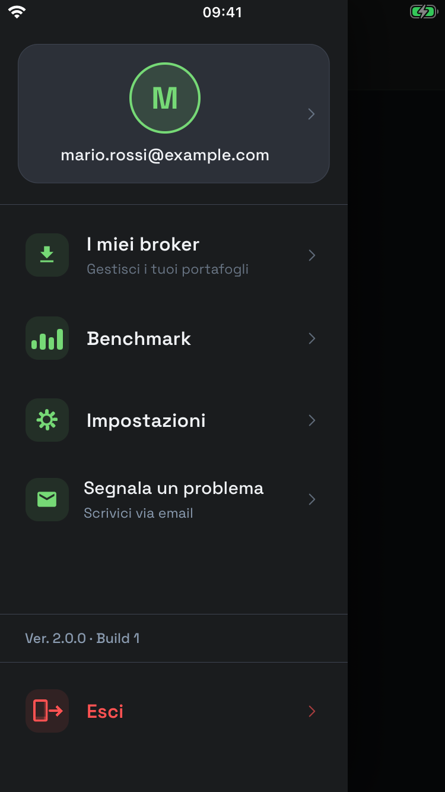
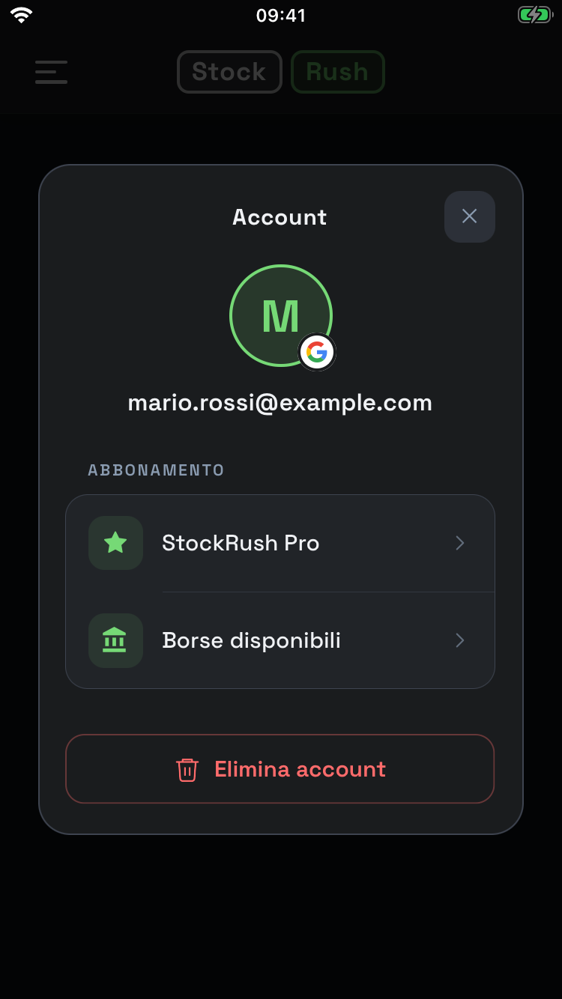
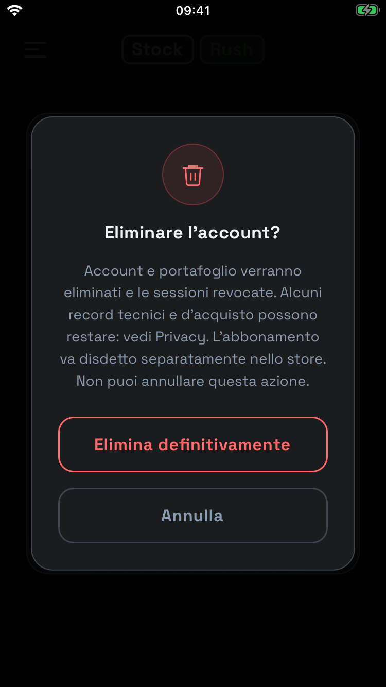
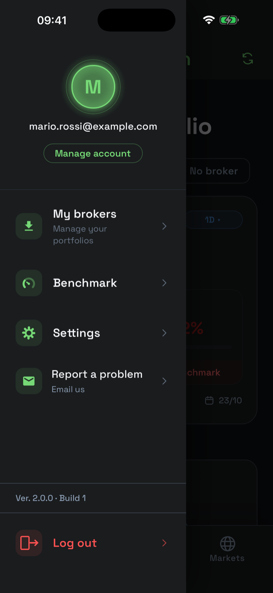
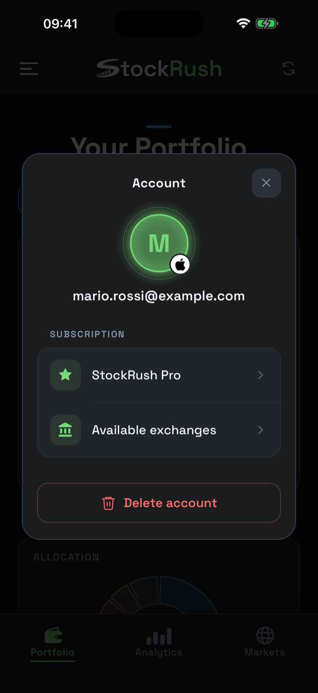
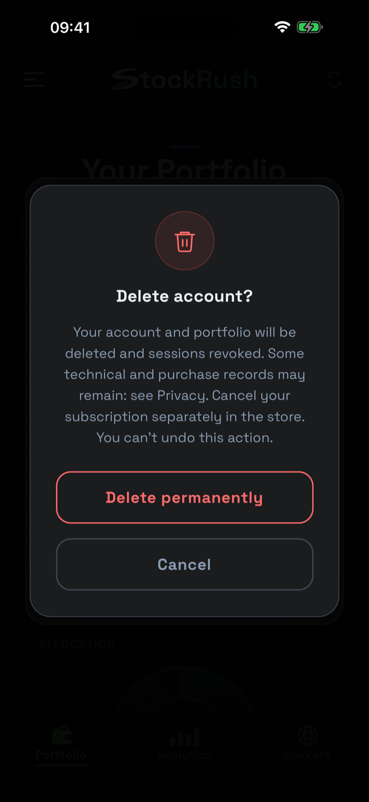

Elimina il tuo account
Come cancellare l'account StockRush e cosa succede ai tuoi dati.
- Puoi eliminare l'account dall'app: menu → Account (il riquadro con la tua email) → Elimina account.
- Account e portafoglio vengono cancellati subito dai nostri server. Non puoi annullare l'operazione.
- Se hai Pro, disdici anche nello store. Eliminare l'account o l'app non ferma i rinnovi.
- Alcuni dati sugli acquisti restano fino a 24 mesi, per prevenire frodi e permetterti di ripristinare Pro.
- Non riesci ad accedere? Scrivici: trovi come più sotto.
Come fare
- Tocca l'icona del menu (☰) in alto a sinistra.
- Tocca in alto il riquadro con la tua email: si apre Account.
- Tocca Elimina account.
- Conferma con Elimina definitivamente.



Cosa viene cancellato e cosa resta
| Dati | Cosa succede |
|---|---|
| Account: identificativo Apple o Google, nome, email | Cancellati subito |
| Portafoglio, benchmark, preferenze, token delle notifiche, chiave pubblica per l'accesso biometrico | Cancellati subito |
| Risultati temporanei di importazioni e verifiche d'acquisto | Cancellati subito |
| Sessioni dell'app e dei widget | Chiuse subito. Restano solo codici tecnici non leggibili (hash) fino alla loro scadenza, poi spariscono in automatico. |
| Dati sul telefono da cui elimini l'account: copia del portafoglio, impostazioni, chiave biometrica, dati del widget | Cancellati dall'app. Altri telefoni e i loro backup non vengono cancellati a distanza. |
| Autorizzazione «Accedi con Apple» | Proviamo a revocarla presso Apple. Se non ci riusciamo, puoi rimuoverla tu nelle impostazioni del tuo ID Apple. |
| Dati sugli acquisti Pro (pseudonimi, senza il portafoglio) | Restano fino a 24 mesi dalla scadenza o revoca dell'abbonamento: servono a prevenire frodi e a ripristinare Pro se crei un nuovo account con lo stesso accesso Apple o Google. |
| Statistiche d'uso, rapporti di errore, email all'assistenza, log e backup | Non spariscono subito: seguono i tempi della Privacy, sezione 6. |
Se non riesci ad accedere all'app
Scrivi a stockrushinfo@gmail.com, se puoi dall'indirizzo email collegato all'account. Se usi «Nascondi la mia email» di Apple e non puoi scrivere da quell'indirizzo, scrivici comunque: ti chiederemo solo quello che serve per verificare che l'account è tuo. Rispondiamo entro un mese.
Non inviarci mai password, codici di accesso, documenti d'identità o estratti conto.
Delete your account
How to delete your StockRush account and what happens to your data.
- You can delete your account in the app: menu → Account (the box with your email) → Delete account.
- Your account and portfolio are deleted from our servers straight away. You cannot undo this.
- If you have Pro, also cancel it in the store. Deleting your account or the app does not stop renewals.
- Some purchase data is kept for up to 24 months, to prevent fraud and let you restore Pro.
- Can't sign in? Email us: see below.
How to do it
- Tap the menu icon (☰) in the top-left corner.
- Tap the box with your email at the top: Account opens.
- Tap Delete account.
- Confirm with Delete permanently.



What is deleted and what remains
| Data | What happens |
|---|---|
| Account: Apple or Google identifier, name, email | Deleted straight away |
| Portfolio, benchmark, preferences, notification token, public key for biometric sign-in | Deleted straight away |
| Temporary results of imports and purchase checks | Deleted straight away |
| App and widget sessions | Closed straight away. Only unreadable technical codes (hashes) remain until they expire, then they are removed automatically. |
| Data on the phone you delete from: portfolio copy, settings, biometric key, widget data | Deleted by the app. Other phones and their backups are not erased remotely. |
| “Sign in with Apple” authorisation | We try to revoke it with Apple. If that fails, you can remove it yourself in your Apple ID settings. |
| Pro purchase data (pseudonymous, without your portfolio) | Kept for up to 24 months after the subscription expires or is revoked: it prevents fraud and lets you restore Pro if you create a new account with the same Apple or Google sign-in. |
| Usage statistics, crash reports, support emails, logs and backups | Not removed straight away: they follow the periods in Privacy, section 6. |
If you can't sign in to the app
Email stockrushinfo@gmail.com, if possible from the email address linked to your account. If you use Apple's “Hide My Email” and can't write from that address, contact us anyway: we will only ask for what we need to check that the account is yours. We reply within one month.
Never send us passwords, sign-in codes, identity documents or account statements.
Informativa sulla privacy
Versione del 17 ottobre 2026
- Usiamo i tuoi dati solo per far funzionare StockRush: account, portafoglio, calcoli, notifiche e abbonamento.
- Niente pubblicità. Non vendiamo i tuoi dati e non li usiamo per profilazione commerciale.
- Le statistiche d'uso (Firebase Analytics) partono solo se dici sì. Puoi cambiare idea in Impostazioni → Privacy.
- I rapporti di errore (Firebase Crashlytics) ci servono a correggere i crash e non contengono il tuo portafoglio.
- Se usi l'importazione con l'AI, il testo del documento viene inviato ad Anthropic.
- Puoi eliminare l'account dall'app quando vuoi. Alcuni dati sugli acquisti restano fino a 24 mesi per prevenire frodi.
- Per qualsiasi richiesta: stockrushinfo@gmail.com.
1. Chi tratta i tuoi dati
Il titolare del trattamento è lo sviluppatore di StockRush (i dati identificativi completi saranno pubblicati qui a breve; nel frattempo puoi scriverci a stockrushinfo@gmail.com). StockRush è il nome dell'app.
Per tutto ciò che riguarda la privacy scrivi a stockrushinfo@gmail.com.
2. Quali dati usiamo e perché
- Account. Accedi con Apple su iPhone o con Google su Android. Riceviamo un identificativo dell'account e, se li condividi, nome ed email. Non riceviamo mai la tua password. Per tenerti collegato usiamo un identificativo del dispositivo e codici di sessione, che sul server salviamo solo in forma non leggibile (hash). Se accedi con Apple conserviamo anche un token di Apple: ci serve per revocare l'autorizzazione quando elimini l'account. Un account Apple e uno Google sono due account StockRush separati, anche se hanno la stessa email.
- Portafoglio. Titoli, quantità, importi, date d'acquisto, dividendi, benchmark, valuta e paese che scegli. Ci servono per calcolare valori e rendimenti, mostrare grafici e widget e sincronizzare il portafoglio. Una copia è sul server e una sul telefono. Il paese che scegli non dice dove ti trovi.
- Importazione da file. Se carichi un file Excel, CSV o PDF del tuo broker, lo leggiamo per ricavare le posizioni. Non teniamo un archivio dei file. Per i broker supportati usiamo un lettore dedicato. Se scegli la lettura con l'AI, il testo del documento viene inviato ad Anthropic e può contenere anche il tuo nome e il numero di conto: se puoi, togli prima i dati che non servono. Il risultato resta salvato 24 ore, solo per non rifare il lavoro se riprovi.
- Notifiche (facoltative, spente all'inizio). Se le attivi, ricevi ogni giorno la percentuale di rendimento e il confronto con il benchmark, senza nomi dei titoli né importi. Conserviamo la tua scelta e il token di notifica di Firebase (FCM). Se le spegni, esci dall'account o lo elimini, il token viene rimosso.
- Accesso biometrico (facoltativo). Impronta e volto restano sul telefono e non arrivano mai a noi. Il telefono custodisce una chiave privata; noi riceviamo solo la chiave pubblica e una firma.
- Abbonamento Pro. Il pagamento lo gestiscono Apple o Google: non vediamo i dati della tua carta. Dallo store riceviamo ciò che serve a verificare l'acquisto: prodotto, date, rinnovi, rimborsi e revoche. Conserviamo le prove d'acquisto in forma cifrata. Per applicare i limiti del piano contiamo i titoli monitorati e le importazioni con l'AI del mese. Per collegare l'acquisto a te usiamo un codice derivato dal tuo accesso Apple o Google: è un dato pseudonimo, non anonimo.
- Assistenza. «Segnala un problema» apre una bozza di email nella tua app di posta: decidi tu se inviarla. La bozza contiene solo piattaforma, versione dell'app e del sistema e lingua. Se ci scrivi, riceviamo il tuo indirizzo, il messaggio e gli allegati che scegli.
- Questa pagina. È ospitata su GitHub Pages: GitHub riceve i dati tecnici della visita, come indirizzo IP e browser. La pagina non usa cookie, statistiche o font esterni.
Cosa è obbligatorio. Senza account e senza i dati delle posizioni non possiamo offrirti il servizio. Notifiche, accesso biometrico, importazione con l'AI e statistiche d'uso sono facoltative: se non le usi, il resto dell'app funziona lo stesso.
Controlli automatici. L'app applica in automatico le regole del tuo piano, per esempio il numero di titoli. Non sono consigli d'investimento e non prendiamo decisioni automatiche che producano effetti giuridici su di te. Se pensi che un blocco sia sbagliato, scrivici e lo verifichiamo.
3. Statistiche d'uso e rapporti di errore
Statistiche d'uso (Firebase Analytics): solo con il tuo consenso
Dopo l'accesso l'app ti chiede una sola volta se vuoi condividere statistiche d'uso. Finché non rispondi, o se dici no, la raccolta resta spenta. Chiudere la domanda con la ✕ vale come no. Puoi cambiare idea quando vuoi in Impostazioni → Privacy → Statistiche d'uso. La scelta vale per il singolo telefono.
Se dici sì, Firebase raccoglie come usi l'app: aperture, sessioni, schermate, alcune azioni (per esempio il tipo di titolo aggiunto, il metodo di accesso o la modalità d'inserimento per quantità o importo), acquisti in-app con prodotto, prezzo e valuta, modello del telefono, sistema, versione dell'app, lingua e un'area geografica approssimativa ricavata dall'IP, senza GPS. Usa un identificativo dell'installazione. Non inviamo mai titoli, importi, nomi del benchmark o ricerche. L'identificativo pubblicitario è disattivato.
Se revochi il consenso, la raccolta si ferma subito e cancelliamo i dati di Analytics salvati sul telefono, compreso il suo identificativo. I dati già inviati restano fino alla scadenza indicata nella sezione 6. Se elimini l'account, l'app ti richiede il consenso al prossimo accesso.
Rapporti di errore (Firebase Crashlytics)
Quando l'app si blocca o incontra un errore, Crashlytics ci invia un rapporto tecnico: tipo di errore, punto del codice, modello del telefono, sistema, versione dell'app e un identificativo dell'installazione. Togliamo dai messaggi credenziali e dati finanziari. Usiamo i rapporti solo per trovare e correggere i problemi. Questa raccolta è sempre attiva, per il nostro interesse legittimo a offrirti un'app stabile e sicura. Puoi opporti scrivendoci.
Firebase può creare un identificativo dell'installazione e un token di notifica già al primo avvio, anche con le notifiche spente. Colleghiamo il token al tuo account solo se attivi le notifiche.
4. Su quali basi giuridiche
| Perché usiamo i dati | Base giuridica |
|---|---|
| Account, portafoglio, calcoli, sincronizzazione, widget, importazioni, notifiche e accesso biometrico che attivi, abbonamento Pro | Contratto: servono a fornirti il servizio che chiedi (art. 6.1.b GDPR) |
| Statistiche d'uso (Firebase Analytics) | Consenso, revocabile in ogni momento (art. 6.1.a GDPR e art. 122 Codice privacy) |
| Rapporti di errore, sicurezza e prevenzione degli abusi | Interesse legittimo a un'app stabile e sicura (art. 6.1.f GDPR) |
| Conservazione dei dati d'acquisto dopo la fine dell'abbonamento o dell'account | Interesse legittimo a prevenire frodi, gestire reclami e ripristinare Pro (art. 6.1.f GDPR) |
| Risposte all'assistenza | Contratto o interesse legittimo a risponderti (art. 6.1.b e 6.1.f GDPR) |
| Richieste delle autorità e altri obblighi | Obbligo di legge, quando previsto (art. 6.1.c GDPR) |
Revocare il consenso non rende illecito quanto fatto prima della revoca.
5. Con chi condividiamo i dati
Non vendiamo i tuoi dati. Li condividiamo solo con i fornitori che servono a far funzionare StockRush:
- Heroku (Salesforce): server dell'app.
- MongoDB Atlas: database.
- Google Firebase: notifiche, rapporti di errore e, solo con il tuo consenso, statistiche d'uso.
- Apple e Google: accesso con il loro account e pagamenti negli store.
- Anthropic: lettura dei documenti nell'importazione con l'AI.
- Fornitori di dati di mercato (Twelve Data, EODHD, OpenFIGI, Massive): ricevono i simboli dei titoli, le valute e i periodi da calcolare, mai il tuo account, le quantità o gli importi.
- Gmail (Google): casella dell'assistenza.
- GitHub: ospita questa pagina.
- Brandfetch: fornirebbe i loghi dei titoli, funzione oggi spenta. Se la attiviamo, riceve l'indirizzo IP e il logo richiesto, mai quantità o account.
Alcuni fornitori trattano i dati per nostro conto; altri, come Apple e Google per accesso e pagamenti, li trattano anche come titolari autonomi. Possono accedere ai dati anche persone da noi autorizzate e, quando la legge lo prevede, le autorità.
Dati fuori dall'Europa. Alcuni fornitori hanno sede negli Stati Uniti o trattano dati fuori dallo Spazio economico europeo. In questi casi il trasferimento si basa su una decisione di adeguatezza della Commissione europea (come l'EU-US Data Privacy Framework, per i fornitori che vi aderiscono) o sulle clausole contrattuali standard. Puoi chiederci una copia delle garanzie.
Informative dei fornitori: Google, Firebase, Apple, Anthropic, Salesforce, MongoDB, Brandfetch, GitHub.
6. Per quanto tempo conserviamo i dati
| Dati | Per quanto |
|---|---|
| Account, portafoglio, benchmark e preferenze | Finché usi l'account. Li cancelliamo quando elimini l'account. |
| Sessioni e codici di accesso | Fino alla scadenza (di norma 7 giorni dall'ultimo rinnovo della sessione), poi cancellazione automatica. |
| Risultati di importazioni e verifiche d'acquisto | 24 ore, per evitare doppie operazioni se riprovi. |
| Testo inviato ad Anthropic | Noi non lo archiviamo. Anthropic dichiara di conservarlo fino a 30 giorni, salvo casi previsti dalle sue condizioni, come obblighi di legge o controlli sugli abusi. |
| Abbonamento: contenuto completo delle notifiche degli store | 30 giorni dopo l'elaborazione della notifica. Se la verifica è ancora in corso o non è riuscita, finché non si chiude. |
| Abbonamento: storico degli eventi (pseudonimo) | 12 mesi. Più a lungo solo finché l'abbonamento è attivo o una verifica è ancora aperta. |
| Abbonamento: dati che collegano l'acquisto al tuo accesso Apple o Google, anche dopo l'eliminazione dell'account | Fino a 24 mesi dalla scadenza o revoca, per prevenire frodi sugli acquisti e permettere il ripristino. |
| Abbonamento: lavori tecnici di verifica conclusi e notifiche anomale messe da parte | Lavori conclusi: 30 giorni. Notifiche anomale: contenuto 30 giorni, registro 12 mesi dalla chiusura. |
| Rapporti di errore (Crashlytics) | 90 giorni, come dichiarato da Firebase. |
| Statistiche d'uso (Analytics) | 2 mesi |
| Email all'assistenza, log del server e backup | Email: il tempo necessario a gestire la tua richiesta. Log del server: al massimo 30 giorni. Backup del database: al massimo 12 mesi; i dati di un account eliminato spariscono dai backup quando questi scadono. |
Eliminare l'account non cancella subito statistiche, rapporti di errore, email, log e backup: seguono i tempi indicati sopra. Vedi anche Elimina account.
7. Sicurezza
Usiamo connessioni cifrate (HTTPS), accessi controllati e sessioni separate per app e widget. Sul telefono, codici di sessione e chiavi biometriche sono nell'archivio sicuro del sistema. Sul server le prove d'acquisto sono cifrate.
Non tutto è cifrato campo per campo: la copia del portafoglio e alcune impostazioni sul telefono non sono cifrate dall'app. I widget mostrano dati del portafoglio sullo schermo: scegli tu cosa rendere visibile. Nessun sistema è sicuro al 100%. Se una violazione dei dati ti espone a un rischio elevato, ti avvisiamo.
8. I tuoi diritti
Puoi chiederci di:
- vedere i tuoi dati e averne una copia;
- correggerli o cancellarli;
- limitarne l'uso;
- riceverli in un formato leggibile da un computer (portabilità);
- opporti agli usi basati sul nostro interesse legittimo, come i rapporti di errore;
- revocare il consenso alle statistiche d'uso, anche da Impostazioni → Privacy.
Scrivi a stockrushinfo@gmail.com. È gratis. Rispondiamo entro un mese. Per richieste complesse o numerose possiamo prendere altri due mesi: in quel caso te lo diciamo entro il primo mese, spiegando perché. Ti chiederemo solo le informazioni necessarie a verificare che sei tu.
Se pensi che trattiamo i tuoi dati in modo scorretto, puoi presentare reclamo al Garante per la protezione dei dati personali o all'autorità del paese in cui vivi, e rivolgerti al giudice.
9. Minori e modifiche
StockRush non è pensato per chi ha meno di 14 anni. Se pensi che un minore ci abbia dato dati senza poterlo fare, scrivici e li cancelliamo.
Se cambiamo questa informativa in modo importante, te lo comunichiamo prima che le modifiche si applichino. Se un nuovo uso dei dati richiede il tuo consenso, te lo chiederemo: continuare a usare l'app non vale come consenso.
Privacy Policy
Version of October 17, 2026
- We use your data only to make StockRush work: account, portfolio, calculations, notifications and subscription.
- No ads. We do not sell your data or use it for commercial profiling.
- Usage statistics (Firebase Analytics) are collected only if you say yes. You can change your mind in Settings → Privacy.
- Crash reports (Firebase Crashlytics) help us fix crashes and do not contain your portfolio.
- If you use the AI import, the document's text is sent to Anthropic.
- You can delete your account in the app at any time. Some purchase data is kept for up to 24 months to prevent fraud.
- For any request: stockrushinfo@gmail.com.
1. Who is responsible for your data
The data controller is the developer of StockRush (full identification details will be published here shortly; in the meantime you can write to stockrushinfo@gmail.com). StockRush is the name of the app.
For anything about privacy, email stockrushinfo@gmail.com.
2. What data we use and why
- Account. You sign in with Apple on iPhone or with Google on Android. We receive an account identifier and, if you share them, your name and email. We never receive your password. To keep you signed in we use a device identifier and session codes, which we store on the server only in unreadable form (hashes). If you sign in with Apple, we also keep an Apple token so we can revoke the authorisation when you delete your account. An Apple account and a Google account are two separate StockRush accounts, even with the same email.
- Portfolio. Instruments, quantities, amounts, purchase dates, dividends, benchmark, and the currency and country you choose. We need them to calculate values and returns, show charts and widgets, and sync your portfolio. One copy is on the server and one on your phone. The country you choose does not say where you are.
- File import. If you upload an Excel, CSV or PDF file from your broker, we read it to extract your positions. We do not keep an archive of files. For supported brokers we use a dedicated reader. If you choose AI reading, the document's text is sent to Anthropic and may include your name and account number: if you can, remove data that is not needed first. The result is kept for 24 hours, only so we don't redo the work if you try again.
- Notifications (optional, off at first). If you turn them on, you get your daily return percentage and the comparison with your benchmark, without instrument names or amounts. We keep your choice and your Firebase notification token (FCM). If you turn them off, sign out or delete your account, the token is removed.
- Biometric sign-in (optional). Your fingerprint and face stay on your phone and never reach us. The phone holds a private key; we only receive the public key and a signature.
- Pro subscription. Apple or Google handle payment: we do not see your card details. From the store we receive what we need to verify the purchase: product, dates, renewals, refunds and revocations. We store purchase proofs encrypted. To apply plan limits we count monitored instruments and this month's AI imports. To link the purchase to you we use a code derived from your Apple or Google sign-in: it is pseudonymous, not anonymous.
- Support. “Report a problem” opens a draft email in your mail app: you decide whether to send it. The draft only contains platform, app and system version and language. If you write to us, we receive your address, the message and any attachments you choose.
- This page. It is hosted on GitHub Pages: GitHub receives technical data about the visit, such as IP address and browser. The page uses no cookies, statistics or external fonts.
What is required. Without an account and position data we cannot provide the service. Notifications, biometric sign-in, AI import and usage statistics are optional: if you don't use them, the rest of the app still works.
Automated checks. The app automatically applies your plan's rules, for example the number of instruments. They are not investment advice, and we make no automated decisions that have legal effects on you. If you think a restriction is wrong, email us and we will check it.
3. Usage statistics and crash reports
Usage statistics (Firebase Analytics): only with your consent
After you sign in, the app asks you once whether you want to share usage statistics. Until you answer, or if you say no, collection stays off. Closing the question with the ✕ counts as no. You can change your mind at any time in Settings → Privacy → Usage statistics. The choice applies to each phone separately.
If you say yes, Firebase collects how you use the app: launches, sessions, screens, some actions (for example the type of instrument added, the sign-in method, or the entry mode by units or amount), in-app purchases with product, price and currency, phone model, system, app version, language, and an approximate area from the IP address, without GPS. It uses an installation identifier. We never send instruments, amounts, benchmark names or searches. The advertising identifier is disabled.
If you withdraw consent, collection stops immediately and we delete the Analytics data stored on your phone, including its identifier. Data already sent is kept until the period in section 6 ends. If you delete your account, the app asks for consent again the next time you sign in.
Crash reports (Firebase Crashlytics)
When the app crashes or hits an error, Crashlytics sends us a technical report: error type, place in the code, phone model, system, app version and an installation identifier. We remove credentials and financial data from the messages. We use reports only to find and fix problems. This collection is always on, based on our legitimate interest in offering you a stable and secure app. You can object by emailing us.
Firebase may create an installation identifier and a notification token at first launch, even with notifications off. We link the token to your account only if you turn notifications on.
4. Legal bases
| Why we use data | Legal basis |
|---|---|
| Account, portfolio, calculations, sync, widgets, imports, notifications and biometric sign-in you turn on, Pro subscription | Contract: needed to provide the service you ask for (GDPR Art. 6(1)(b)) |
| Usage statistics (Firebase Analytics) | Consent, which you can withdraw at any time (GDPR Art. 6(1)(a) and Art. 122 of the Italian Privacy Code) |
| Crash reports, security and abuse prevention | Legitimate interest in a stable and secure app (GDPR Art. 6(1)(f)) |
| Keeping purchase data after the subscription or account ends | Legitimate interest in preventing fraud, handling complaints and restoring Pro (GDPR Art. 6(1)(f)) |
| Replying to support requests | Contract or legitimate interest in replying to you (GDPR Art. 6(1)(b) and 6(1)(f)) |
| Requests from authorities and other duties | Legal obligation, where applicable (GDPR Art. 6(1)(c)) |
Withdrawing consent does not make earlier processing unlawful.
5. Who we share data with
We do not sell your data. We share it only with the providers needed to run StockRush:
- Heroku (Salesforce): app servers.
- MongoDB Atlas: database.
- Google Firebase: notifications, crash reports and, only with your consent, usage statistics.
- Apple and Google: sign-in with their accounts and store payments.
- Anthropic: reading documents in the AI import.
- Market-data providers (Twelve Data, EODHD, OpenFIGI, Massive): they receive instrument symbols, currencies and the periods to calculate, never your account, quantities or amounts.
- Gmail (Google): support mailbox.
- GitHub: hosts this page.
- Brandfetch: would provide instrument logos, a feature currently off. If we turn it on, it receives your IP address and the requested logo, never quantities or your account.
Some providers process data on our behalf; others, such as Apple and Google for sign-in and payments, also process it as independent controllers. People we authorise and, where the law requires, authorities may also access data.
Data outside Europe. Some providers are based in the United States or process data outside the European Economic Area. In those cases the transfer relies on a European Commission adequacy decision (such as the EU-US Data Privacy Framework, for providers that have joined it) or on standard contractual clauses. You can ask us for a copy of the safeguards.
Provider privacy notices: Google, Firebase, Apple, Anthropic, Salesforce, MongoDB, Brandfetch, GitHub.
6. How long we keep data
| Data | How long |
|---|---|
| Account, portfolio, benchmark and preferences | As long as you use the account. We delete them when you delete the account. |
| Sessions and sign-in codes | Until they expire (normally 7 days after the session was last renewed), then deleted automatically. |
| Results of imports and purchase checks | 24 hours, to avoid duplicate operations if you try again. |
| Text sent to Anthropic | We do not store it. Anthropic states it keeps it for up to 30 days, except in cases set out in its terms, such as legal duties or abuse checks. |
| Subscription: full content of store notifications | 30 days after the notification is processed. If the check is still in progress or has failed, until it is closed. |
| Subscription: event history (pseudonymous) | 12 months. Longer only while the subscription is active or a check is still open. |
| Subscription: data linking the purchase to your Apple or Google sign-in, also after account deletion | Up to 24 months after expiry or revocation, to prevent purchase fraud and allow restoration. |
| Subscription: completed technical checks and set-aside unusual notifications | Completed checks: 30 days. Unusual notifications: content 30 days, record 12 months after closure. |
| Crash reports (Crashlytics) | 90 days, as stated by Firebase. |
| Usage statistics (Analytics) | 2 months |
| Support emails, server logs and backups | Emails: as long as needed to handle your request. Server logs: at most 30 days. Database backups: at most 12 months; the data of a deleted account disappears from backups when they expire. |
Deleting your account does not immediately erase statistics, crash reports, emails, logs and backups: they follow the periods above. See also Delete account.
7. Security
We use encrypted connections (HTTPS), access controls and separate sessions for the app and widgets. On your phone, session codes and biometric keys are in the system's secure storage. On the server, purchase proofs are encrypted.
Not everything is encrypted field by field: the portfolio copy and some settings on your phone are not encrypted by the app. Widgets show portfolio data on screen: you choose what to make visible. No system is 100% secure. If a data breach puts you at high risk, we will tell you.
8. Your rights
You can ask us to:
- see your data and get a copy;
- correct or delete it;
- restrict its use;
- receive it in a machine-readable format (portability);
- object to uses based on our legitimate interest, such as crash reports;
- withdraw consent to usage statistics, also from Settings → Privacy.
Email stockrushinfo@gmail.com. It is free. We reply within one month. For complex or numerous requests we may take two more months: if so, we tell you within the first month and explain why. We will only ask for the information needed to check it's you.
If you think we handle your data unfairly, you can complain to the Italian data protection authority (Garante) or the authority of the country where you live, and go to court.
9. Children and changes
StockRush is not meant for anyone under 14. If you think a child gave us data without being allowed to, email us and we will delete it.
If we change this policy in an important way, we will tell you before the changes apply. If a new use of data needs your consent, we will ask for it: continuing to use the app does not count as consent.
Termini del servizio e degli abbonamenti
StockRush Free e Pro · Versione 1.0 · In vigore dal 17 ottobre 2026
- StockRush è gratuito. Pro è un abbonamento facoltativo con più titoli e più importazioni con l'AI.
- Pro costa 3,49 € al mese o 29,99 € all'anno, IVA inclusa. Si compra e si rinnova solo tramite App Store o Google Play. Non c'è una prova gratuita.
- Il rinnovo è automatico. Puoi disdire quando vuoi dallo store: Pro resta attivo fino alla fine del periodo pagato.
- Hai 14 giorni per recedere e avere il rimborso (sezione 8).
- Limiti e funzioni possono cambiare. Ti avvisiamo prima e puoi disdire (sezione 10).
- Se Pro finisce non perdi dati: i primi 20 titoli restano aggiornati, gli altri si fermano all'ultimo valore.
- Eliminare l'account non disdice l'abbonamento.
- StockRush non è consulenza finanziaria.
1. Chi siamo e cosa offriamo
Il servizio è fornito dallo sviluppatore di StockRush (i dati identificativi completi saranno pubblicati qui a breve). Contatto: stockrushinfo@gmail.com.
StockRush è un'app per iPhone e Android: ti permette di seguire il tuo portafoglio e di confrontarlo con un indice di riferimento (benchmark). Serve un telefono compatibile e una connessione a internet.
Questi Termini valgono per il piano gratuito (Free) e per l'abbonamento Pro. Per pagamenti e rimborsi valgono anche le condizioni di App Store o Google Play. I diritti che la legge ti riconosce come consumatore restano sempre validi, anche se qui non sono citati.
2. Piani Free e Pro
| Free | Pro | |
|---|---|---|
| Titoli monitorati | 20 | 50 |
| Importazioni con l'AI al mese | 3 | 20 |
| Borse | Quelle indicate come Free nell'app | Anche quelle indicate come Pro |
| Prezzo | Gratis | 3,49 €/mese o 29,99 €/anno |
- Più acquisti dello stesso titolo contano come un solo titolo.
- Le importazioni con l'AI si contano per mese di calendario (ora UTC). Quelle non usate non passano al mese successivo. Il rinnovo dell'abbonamento non azzera il conteggio.
- Mensile e annuale danno le stesse funzioni. Non c'è condivisione in famiglia.
- Pro non aggiunge titoli o borse che l'app indica come non supportati.
Questi sono i limiti di oggi e possono cambiare, anche durante un periodo già pagato. Se cambiano, ti avvisiamo prima e puoi disdire: trovi come nella sezione 10.
3. Prezzi e pagamento
I prezzi sopra sono quelli di lancio in Italia e includono l'IVA. Vale sempre il prezzo che lo store ti mostra prima di confermare l'acquisto.
Paghi tramite App Store o Google Play: StockRush non vede i dati della tua carta. Pro si attiva quando abbiamo verificato l'acquisto con lo store. Se il pagamento resta in attesa, usa «Controlla stato» o «Ripristina acquisti» prima di riprovare.
Se cambiamo il prezzo, lo store ti avvisa prima del rinnovo e, quando le sue regole o la legge lo richiedono, ti chiede di accettarlo. Il nuovo prezzo non si applica al periodo già pagato.
4. Rinnovo e disdetta
L'abbonamento si rinnova in automatico per lo stesso periodo (un mese o un anno), finché non lo disdici. Puoi disdire in qualsiasi momento, senza costi, nello store:
Disdici prima della data di rinnovo indicata nello store: Apple può addebitare il rinnovo nelle 24 ore precedenti. Dopo la disdetta Pro resta attivo fino alla fine del periodo pagato, salvo rimborsi o revoche decisi dallo store.
Se un pagamento non va a buon fine, lo store può concederti alcuni giorni per sistemarlo (periodo di tolleranza). Se poi sospende l'abbonamento, Pro non è attivo finché il pagamento non riesce.
5. Quando Pro finisce
Torni al piano Free. Non cancelliamo nessun dato.
- Restano aggiornati i primi 20 titoli, nell'ordine in cui sono entrati nel portafoglio. Per i portafogli che esistevano già al lancio di Pro vale l'ordine in cui i titoli comparivano nella copia salvata sul server.
- Gli altri si fermano all'ultimo valore disponibile e mostrano l'etichetta «Bloccato» con la data. Restano nel totale del portafoglio, convertiti al cambio del giorno, quando l'ultimo valore e il cambio sono disponibili; se mancano, l'app indica che sono esclusi. Il totale può quindi includere valori non aggiornati, e l'app lo segnala.
- Un titolo di una borsa riservata a Pro resta bloccato anche se è tra i primi 20, e occupa comunque il suo posto.
- Se rimuovi un titolo aggiornato, il primo dei bloccati torna attivo, purché la sua borsa sia disponibile con Free.
- Puoi vedere e modificare tutto. Per aggiungere titoli o importare devi rientrare nei limiti Free.
- Le importazioni con l'AI tornano a 3 al mese, contando quelle già usate nel mese.
6. Account e ripristino
L'abbonamento è legato all'account StockRush con cui l'hai comprato e allo store in cui l'hai pagato.
- Su iPhone accedi con Apple, su Android con Google. Sono due account StockRush diversi, anche se hanno la stessa email: un Pro comprato su uno non vale sull'altro.
- Se cambi telefono o reinstalli l'app, accedi con lo stesso account e usa «Ripristina acquisti».
- Due abbonamenti sullo stesso account non sommano i limiti.
- Se elimini l'account e ne crei uno nuovo con lo stesso accesso Apple o Google, puoi ripristinare un abbonamento ancora attivo. Il portafoglio eliminato non torna.
Se il ripristino non funziona, scrivici senza inviare password, codici o estratti conto.
7. Eliminazione dell'account
Puoi eliminare l'account anche con Pro attivo. Eliminare l'account o l'app non disdice l'abbonamento: per evitare altri addebiti disdici nello store. Per sapere quali dati restano, vedi Elimina account e la Privacy.
8. Diritto di recesso
Se sei un consumatore, puoi recedere dall'abbonamento entro 14 giorni dall'acquisto, senza dare motivazioni. Recedere è diverso da disdire: la disdetta ferma solo i rinnovi futuri, il recesso annulla l'acquisto e ti dà diritto al rimborso.
Come recedere dipende dallo store in cui hai pagato:
- App Store. Usa la funzione di recesso di Apple: dal tuo Apple Account apri la cronologia degli acquisti, scegli l'abbonamento e conferma il recesso. Apple ti manda una conferma per email con data e ora e ti rimborsa. I dettagli sono nelle condizioni di Apple Media Services. Su App Store non possiamo emettere rimborsi noi: se hai difficoltà, scrivici e ti aiutiamo.
- Google Play. Usa la procedura di recesso di Google Play oppure scrivici a stockrushinfo@gmail.com, per esempio: «Recedo dall'abbonamento StockRush Pro acquistato il [data] su Google Play». Puoi usare anche il modulo tipo di recesso. Se ci scrivi, ti confermiamo la ricezione per email, con data e ora, ed emettiamo noi il rimborso tramite Google Play.
Cosa succede dopo. Pro termina e ricevi il rimborso del pagamento entro 14 giorni dal recesso, con lo stesso metodo che hai usato per pagare.
9. Cosa fa e cosa non fa StockRush
StockRush è uno strumento informativo. Non esegue operazioni finanziarie e non dà consigli d'investimento o fiscali. Pro aumenta i limiti, ma non garantisce rendimenti, quotazioni in tempo reale o che ogni fonte di dati sia sempre disponibile.
Quotazioni, grafici e rendimenti possono essere in ritardo, incompleti o stimati: controlla sempre data e metodo indicati nell'app. Le importazioni, anche quelle con l'AI, possono contenere errori: controlla i titoli prima di confermarli.
- Card e widget mostrano il rendimento rispetto al costo o all'inizio del periodo scelto, con i dividendi lordi noti.
- Il grafico del portafoglio mostra una performance TWR (a tempo ponderato), ricostruita dalle posizioni disponibili. Non è il guadagno in euro e può differire da card e widget, perché misura un'altra cosa.
- Il grafico di un titolo mostra l'andamento del prezzo, non il rendimento dei tuoi acquisti.
- Limiti dei calcoli. Non ricostruiamo liquidità, vendite, posizioni chiuse, imposte e commissioni. I dividendi sono lordi e non si considerano reinvestiti; se la nostra fonte non li copre, l'app li indica come esclusi. I cambi sono gli ultimi disponibili, non quelli storici. Un benchmark ad accumulazione reinveste i proventi: anche questo influenza il confronto.
10. Modifiche al servizio e ai Termini
StockRush è un servizio che evolve. Possiamo cambiare funzioni, limiti dei piani (numero di titoli, importazioni con l'AI, borse disponibili) e questi Termini per motivi validi: per esempio costi o condizioni dei fornitori di dati, sicurezza e prevenzione degli abusi, nuove regole di legge o degli store, miglioramenti del prodotto.
- Ti avvisiamo prima, almeno 30 giorni prima, con un messaggio che puoi conservare (per esempio un'email): ti spieghiamo cosa cambia, da quando, e come recedere se la modifica ti penalizza.
- Se la modifica non ti va, puoi disdire il rinnovo dallo store, senza costi: Pro resta attivo fino alla fine del periodo pagato.
- Se la modifica peggiora Pro in modo non trascurabile durante un periodo già pagato, puoi anche recedere gratuitamente entro 30 giorni dall'avviso (o dalla modifica, se arriva dopo). Ti rimborsiamo la parte di prezzo del periodo che resta, oltre a quanto ti spetta per legge se nel frattempo il servizio non era conforme (sezione 11).
- I tuoi dati restano. Se un limite scende, i titoli in più si comportano come descritto nella sezione 5: si fermano all'ultimo valore, non vengono cancellati.
- Le correzioni urgenti per sicurezza o per obblighi di legge possono valere subito: in quel caso te lo diciamo appena possibile.
11. Se qualcosa non funziona
Pro deve funzionare come descritto per tutta la durata dell'abbonamento, compresi gli aggiornamenti necessari a mantenerlo funzionante e sicuro. Se non è così:
- hai diritto a farlo sistemare gratis, in tempi ragionevoli e senza disagi importanti;
- puoi chiedere una riduzione del prezzo o chiudere il contratto con il rimborso dovuto se non lo sistemiamo, se ci rifiutiamo, se il problema si ripete o se è grave fin da subito.
Questi diritti valgono anche se usi la procedura di rimborso dello store. Non escludiamo le responsabilità che la legge non permette di limitare.
12. Uso corretto e sospensioni
Usa StockRush per seguire il tuo portafoglio. Non cercare di aggirare accesso, limiti o verifiche degli acquisti, e non danneggiare il servizio. I dati di mercato restano dei loro fornitori: non puoi rivenderli o ridistribuirli.
In caso di abuso o rischio per la sicurezza possiamo limitare o sospendere l'account, in modo proporzionato. Ti diciamo il motivo e come chiedere una verifica; nei casi urgenti possiamo intervenire prima di avvisarti. Una sospensione non cancella il portafoglio e non ti toglie i diritti sul periodo pagato.
13. Assistenza, reclami e legge applicabile
Per problemi, acquisti o reclami scrivi a stockrushinfo@gmail.com, indicando telefono, versione dell'app e cosa è successo. Rispondiamo il prima possibile.
Si applica la legge italiana, senza toglierti le tutele del paese in cui vivi. Per le controversie è competente il giudice del luogo in cui risiedi, come prevede la legge a tutela dei consumatori. Non ti imponiamo arbitrati.
Condizioni degli store: Apple Media Services e Google Play.
Service and Subscription Terms
StockRush Free and Pro · Version 1.0 · In effect from October 17, 2026
- StockRush is free. Pro is an optional subscription with more instruments and more AI imports.
- Pro costs €3.49 per month or €29.99 per year, VAT included. You buy and renew it only through the App Store or Google Play. There is no free trial.
- It renews automatically. You can cancel at any time in the store: Pro stays active until the end of the paid period.
- You have 14 days to withdraw and get a refund (section 8).
- Limits and features may change. We tell you in advance and you can cancel (section 10).
- If Pro ends you lose no data: your first 20 instruments stay updated, the others freeze at their last value.
- Deleting your account does not cancel the subscription.
- StockRush is not financial advice.
1. Who we are and what we offer
The service is provided by the developer of StockRush (full identification details will be published here shortly). Contact: stockrushinfo@gmail.com.
StockRush is an app for iPhone and Android: it lets you track your portfolio and compare it with a reference index (benchmark). You need a compatible phone and an internet connection.
These Terms cover the free plan (Free) and the Pro subscription. For payments and refunds, the App Store or Google Play terms also apply. Your statutory consumer rights always remain valid, even if they are not mentioned here.
2. Free and Pro plans
| Free | Pro | |
|---|---|---|
| Monitored instruments | 20 | 50 |
| AI imports per month | 3 | 20 |
| Exchanges | Those marked Free in the app | Also those marked Pro |
| Price | Free | €3.49/month or €29.99/year |
- Several purchases of the same instrument count as one instrument.
- AI imports are counted per calendar month (UTC time). Unused ones do not carry over to the next month. Renewing the subscription does not reset the count.
- Monthly and yearly plans give the same features. There is no family sharing.
- Pro does not add instruments or exchanges that the app shows as unsupported.
These are today's limits and they may change, even during a period you have already paid for. If they change, we tell you in advance and you can cancel: see section 10.
3. Prices and payment
The prices above are the launch prices in Italy and include VAT. The price the store shows you before you confirm the purchase always applies.
You pay through the App Store or Google Play: StockRush does not see your card details. Pro activates once we have verified the purchase with the store. If the payment stays pending, use “Check status” or “Restore purchases” before trying again.
If we change the price, the store tells you before renewal and, where its rules or the law require it, asks you to accept. The new price does not apply to a period already paid for.
4. Renewal and cancellation
The subscription renews automatically for the same period (one month or one year) until you cancel it. You can cancel at any time, at no cost, in the store:
Cancel before the renewal date shown in the store: Apple may charge the renewal in the preceding 24 hours. After you cancel, Pro stays active until the end of the paid period, unless the store issues a refund or revocation.
If a payment fails, the store may give you a few days to fix it (grace period). If it then suspends the subscription, Pro is not active until the payment goes through.
5. When Pro ends
You go back to the Free plan. We do not delete any data.
- Your first 20 instruments, in the order they entered your portfolio, stay updated. For portfolios that already existed when Pro launched, the order is the one in which instruments appeared in the copy saved on the server.
- The others freeze at their last available value and show a “Blocked” label with the date. They stay in your portfolio total, converted at the current exchange rate, when the last value and the rate are available; if not, the app shows that they are excluded. So the total can include values that are not up to date, and the app tells you.
- An instrument on a Pro-only exchange stays blocked even if it is among the first 20, and still takes its place.
- If you remove an updated instrument, the first blocked one becomes active again, provided its exchange is available on Free.
- You can view and edit everything. To add instruments or import, you must be within the Free limits.
- AI imports go back to 3 per month, counting the ones already used this month.
6. Accounts and restoring purchases
The subscription is linked to the StockRush account you bought it with and to the store you paid in.
- On iPhone you sign in with Apple, on Android with Google. These are two different StockRush accounts, even with the same email: Pro bought on one does not work on the other.
- If you change phone or reinstall the app, sign in with the same account and use “Restore purchases”.
- Two subscriptions on the same account do not add up their limits.
- If you delete your account and create a new one with the same Apple or Google sign-in, you can restore a subscription that is still active. The deleted portfolio does not come back.
If restoring doesn't work, email us without sending passwords, codes or account statements.
7. Account deletion
You can delete your account even with Pro active. Deleting your account or the app does not cancel the subscription: to avoid further charges, cancel in the store. To see which data remains, read Delete account and the Privacy Policy.
8. Right of withdrawal
If you are a consumer, you can withdraw from the subscription within 14 days of purchase, without giving a reason. Withdrawing is different from cancelling: cancelling only stops future renewals, withdrawing undoes the purchase and entitles you to a refund.
How to withdraw depends on the store you paid in:
- App Store. Use Apple's withdrawal function: in your Apple Account open your purchase history, choose the subscription and confirm the withdrawal. Apple emails you a confirmation with date and time and refunds you. Details are in the Apple Media Services terms. We cannot issue App Store refunds ourselves: if you have trouble, email us and we will help.
- Google Play. Use the Google Play withdrawal process or email us at stockrushinfo@gmail.com, for example: “I withdraw from the StockRush Pro subscription bought on [date] on Google Play”. You can also use the model withdrawal form. If you email us, we confirm receipt by email, with date and time, and issue the refund ourselves through Google Play.
What happens next. Pro ends and you get a refund of your payment within 14 days of withdrawing, using the same method you paid with.
9. What StockRush does and does not do
StockRush is an information tool. It does not execute financial transactions and does not give investment or tax advice. Pro raises the limits but does not guarantee returns, real-time prices or that every data source is always available.
Prices, charts and returns may be delayed, incomplete or estimated: always check the date and method shown in the app. Imports, including AI imports, may contain errors: check the instruments before confirming them.
- Cards and widgets show the return against cost or against the start of the chosen period, with known gross dividends.
- The portfolio chart shows a TWR (time-weighted) performance, rebuilt from the available positions. It is not your profit in euros and may differ from cards and widgets, because it measures something else.
- An instrument's chart shows its price movement, not the return on your purchases.
- Calculation limits. We do not rebuild cash, sales, closed positions, taxes and fees. Dividends are gross and not treated as reinvested; if our source does not cover them, the app marks them as excluded. Exchange rates are the latest available, not historical ones. An accumulating benchmark reinvests its income: this also affects the comparison.
10. Changes to the service and these Terms
StockRush is an evolving service. We may change features, plan limits (number of instruments, AI imports, available exchanges) and these Terms for valid reasons: for example data providers' costs or conditions, security and abuse prevention, new legal or store rules, or product improvements.
- We tell you in advance, at least 30 days before, with a message you can keep (for example an email): we explain what changes, from when, and how to withdraw if the change disadvantages you.
- If you don't like the change, you can cancel renewal in the store at no cost: Pro stays active until the end of the paid period.
- If the change makes Pro worse in a more than minor way during a period already paid for, you can also withdraw free of charge within 30 days of the notice (or of the change, if later). We refund the part of the price for the remaining period, plus anything due by law if the service was not conforming in the meantime (section 11).
- Your data stays. If a limit goes down, the extra instruments behave as described in section 5: they freeze at their last value and are not deleted.
- Urgent fixes for security or legal duties may apply immediately: in that case we tell you as soon as possible.
11. If something doesn't work
Pro must work as described for the whole subscription, including the updates needed to keep it working and secure. If it doesn't:
- you are entitled to have it fixed free of charge, within a reasonable time and without significant inconvenience;
- you can ask for a price reduction or end the contract with the refund due if we don't fix it, refuse to, the problem keeps coming back, or it is serious from the start.
These rights apply even if you use the store's refund process. We do not exclude liability that the law does not allow us to limit.
12. Fair use and suspension
Use StockRush to track your portfolio. Do not try to get around sign-in, limits or purchase checks, and do not harm the service. Market data belongs to its providers: you may not resell or redistribute it.
In case of abuse or a security risk we may limit or suspend the account, proportionately. We tell you the reason and how to ask for a review; in urgent cases we may act before telling you. A suspension does not delete your portfolio or take away your rights for the paid period.
13. Support, complaints and applicable law
For problems, purchases or complaints, email stockrushinfo@gmail.com, with your phone, app version and what happened. We reply as soon as possible.
Italian law applies, without taking away the protections of the country where you live. Disputes go to the court of the place where you live, as consumer-protection law provides. We do not impose arbitration.
Store terms: Apple Media Services (Italy) and Google Play (Italy).